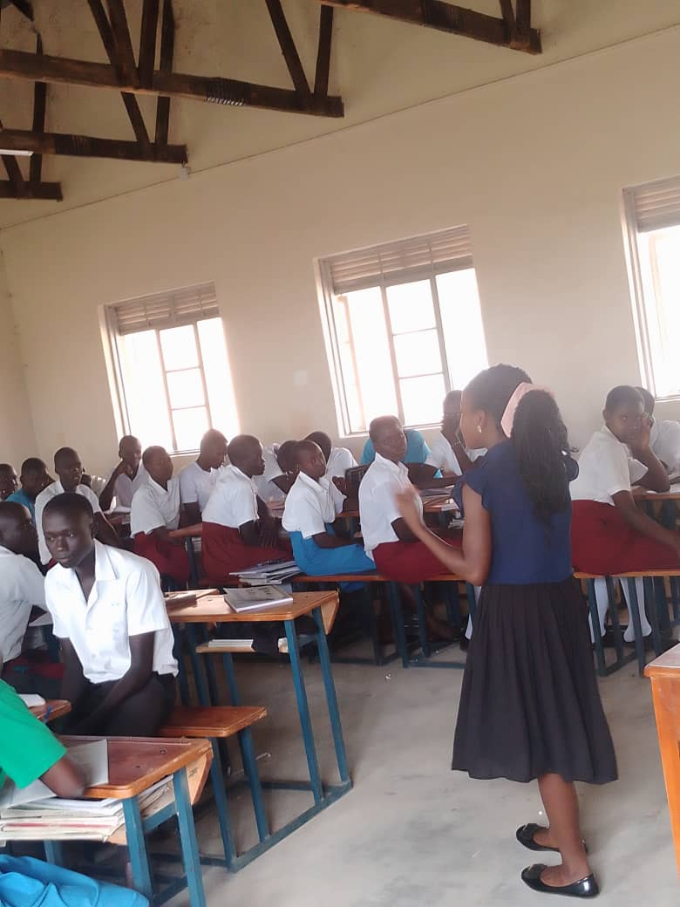

Rehabilitation & Care
Identifying, adopting, and safely housing destitute, disabled, and abandoned children. We protect their base legal rights and cultivate deep emotional healing.
Education & Sponsorship
Providing high-quality nursery, primary, and secondary school placement alongside structured mentoring programmes to lift structural academic constraints.
Medical Care & Outreach
Improving neighbourhood water supply, providing access to essential clinical therapies, and implementing targeted economic support programmes for young widows.
Urgent Realities Countered

Exploitative Child Labour
Preventing children from entering backbreaking farm tasks due to resource constraints.

Social Isolation
Breaking stigmas surrounding children who have lost parents due to HIV/AIDS.

Educational Dropout
Stepping in to anchor siblings forced out of schools to survive day-to-day.
The 6 Core Competencies

Emotional Healing

Academic Excellence

Vocational Skills

Spiritual Growth

Social Integration

Economic Empowerment
Empower. Elevate. Restore.
We are committed to cultivating the 6 core competencies of our beneficiaries: emotional healing, academic excellence, vocational skills, spiritual growth, social integration, and economic empowerment.
Learn MoreAccountability Guarantee
At El-Shaddai Orphanage Foundation, resource tracking and transparency serve as our operating foundation. Every single contribution received goes directly to field initiatives in Usuk sub-county, managed through explicit performance tracking benchmarks to guarantee maximum real-world impact.
Vulnerable children provided critical medical assistance and health restoration metrics.
Widows and struggling households equipped through sustainable farming initiatives.
Scholastic fees, uniforms, and structural education placements fully managed.
Grassroots community outreach networks active throughout Katakwi District.
Quick Links
Core Foundation Contact
Field Base: Usuk Sub-County, Katakwi District, Eastern Uganda.
Head Office: Wakiso District, Nansana Municipality.
Hotline: +256 774 538 481